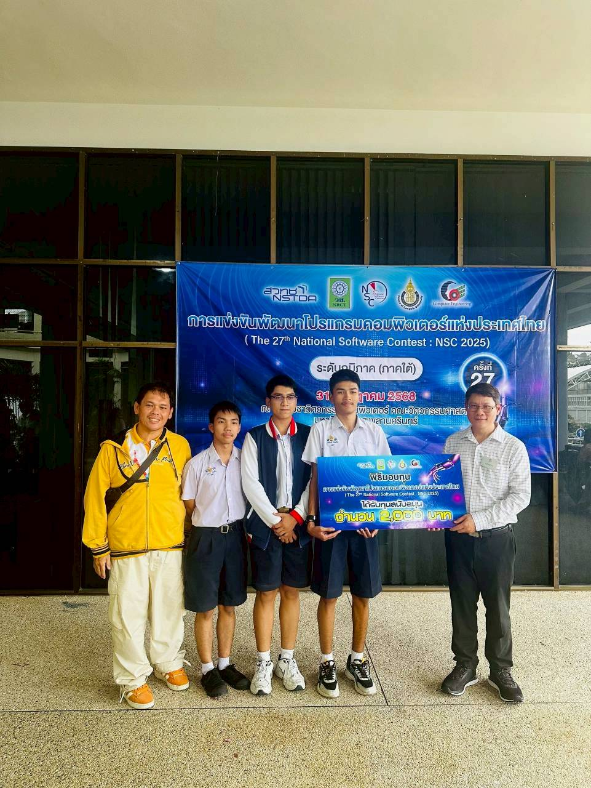
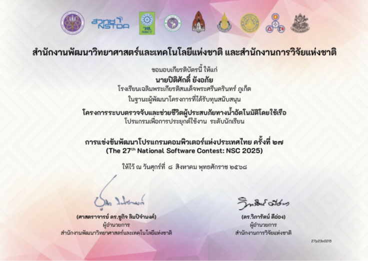

ผ่านการคัดเลือกรอบข้อเสนอโครงการระดับภาคและได้รับทุนสนับสนุน รอบนําเสนอผลงานภาคใต้ ในการแข่งขันNational Software Contest ครั้งที่ 27 (NSC2025)


ผมและทีมได้พัฒนาโครงงาน ระบบตรวจจับและช่วยชีวิตผู้ประสบภัยทางนํ้าอัตโนมัติโดยใช้เรือ โดยทีมของพวกเราได้พัฒนาระบบตรวจจจับคนจมนํ้า โดยใช้ YOLO V12 และเราได้ทำการสร้างเรือและสร้างวงจรระบบขับเคลื่อนพร้อมติดตั้งอุปกรณ์ช่วยเหลือเบื้องต้น โดยในการทำเรือและระบบตรวจจับยังมีความท้าทายในเรื่องของความแม่นยำผมและทีมจึงทำการเทรนโมเดลเพิ่มเติมจากโมเดลในตอนแรกให้มีความผิดพลาดในการจำแนกน้อยที่สุด จนผมและทีมสามารถผ่านเข้ารอบนำเสนอผลงานภาคใต้ได้
สิ่งที่ได้รับจากโครงการนี้ คือ การแก้ไขปัญหาเชิงเทคนิคทั้งในด้านซอฟต์แวร์และฮาร์ดแวร์ ฝึกฝนการเทรนโมเดล AI เพิ่มเติมโดยให้โมเดลเกิดความผิดพลาดน้อยที่สุดและที่สำคัญคือทักษะการนำเสนอและการทำงานเป็นทีม